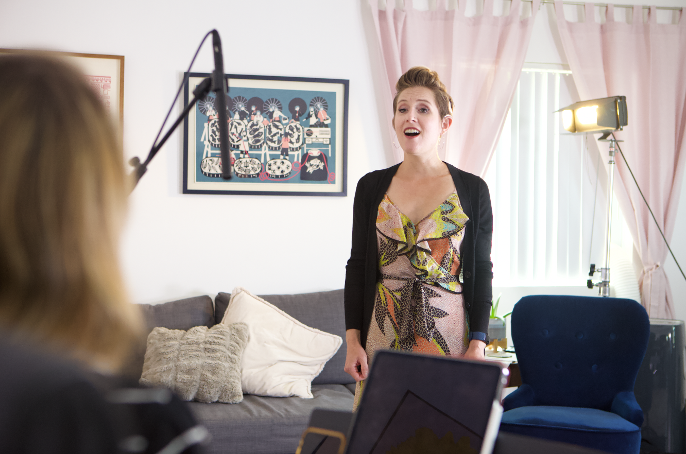
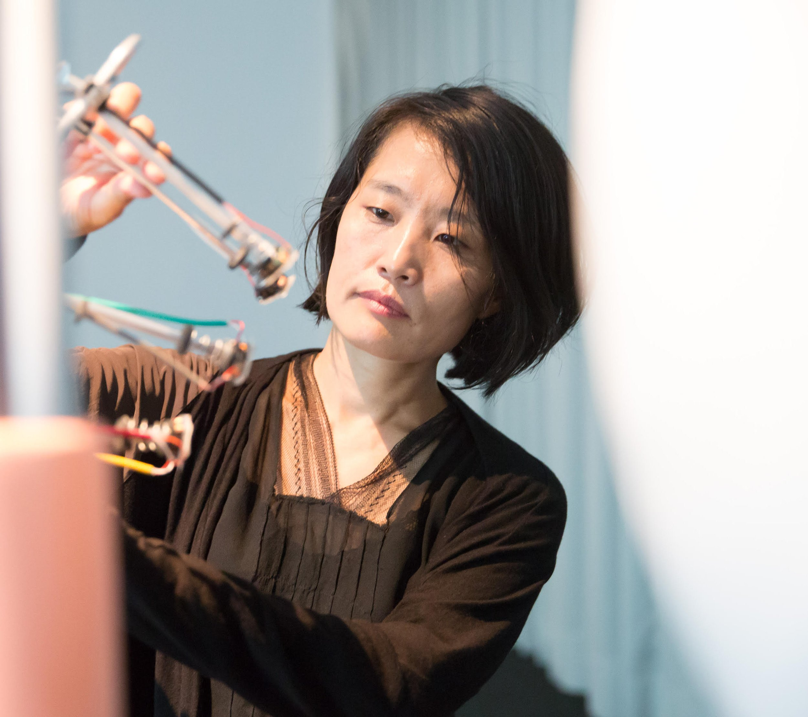

About

Voice and the ability to create sounds that emanate from the body are fundamental to human experience. Yet, many people in the hard-of-hearing community have no relationship to the creative power of their voice, and as a result do not experience an entire aspect of human embodiment.
In a collaboration between students from USC’s Thornton School of Music and the Hearing Loss Association of America LA (HLAA), Here, My Voice supports members of the hard-of-hearing community by providing individual voice lessons designed to help members gain confidence in using their voice. The program will also assists members in the exploration of the creative and expressive possibilities of their voice.
Meet The Team

JURI HWANG
Principle Investigator
“A deep and multi-disciplinary collaboration was critical in building Here, My Voice.”
The project originated from artist-researcher’s intuitive understanding of the pains the community members experience and their longing to re/connect with their voice to experience its creative possibilities. It also comes from a bold and artistic imagination of what we can be possible through human connections and what we can accomplish when we come together with shared passion to improve the lives of vulnerable members of our society. Without an existing example to guide us, we relied on deep collaboration of a passionate, multidisciplinary team of experts in building our program. As a principal investigator, I am extremely proud of the work and dedication of our truly exceptional team comprised of domain experts, faculty mentors, our brilliant vocal arts students, and the hard of hearing participants, who bestowed their trust on us and stepped out of their comfort zone to try something new. I am grateful for the generous support of Arts in Action to make to this project to come true and to blossom.
FRANCES NOWLEN
Project Coordinator
“I was so inspired by the program's ability to improve vocal confidence and emotions while singing aided through music.”
Working as a project coordinator for the Here, My Voice program has been one of the most influential and inspiring activities I have been fortunate enough to be able to be a part of. Throughout the process, I have learned that success in all forms truly relies on collaboration, both within coordination and especially seen between our teacher and student pairs. I was so inspired by the program's ability to improve vocal confidence and emotions while singing aided through music, as noticeable during our Final Performance. It was a pleasure to observe the power of connection and friendship bloom, even over Zoom, and I was inspired by the commitment, openness, and bravery to step out of comfort zones by all those who participated.